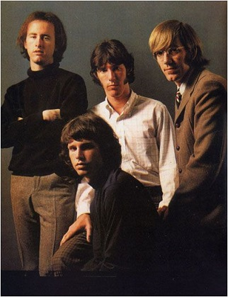

| The 1975 es una banda de indie rock formada en Mánchester, Reino Unido. La banda está conformada por Matthew Healy (voz, guitarra), Adam Hann (guitarra), George Daniel (batería, coros) y Ross MacDonald (bajo). Han publicado cuatro EP y dos álbumes de estudio, el primero titulado con el mismo nombre de la banda fue publicado en 2013 por el sello Dirty Hit/Polydor. El disco debutó como número uno en la lista UK Albums Chart el 8 de septiembre de ese año. El grupo ha realizado giras internacionales y también se presentó en el Festival Coachella 2014. | The Neighbourhood es una banda de Indie Pop/Rock formada en California, Estados Unidos en Agosto, 2011. La banda esta conformada por Jesse Rutherford (Vocalista), Jeremy Freedman (Guitarra),Zach Abels (Guitarra), Mikey Margott (Bajo), y Bryan Sammis (Bateria). La banda se daría a conocer al lanzar su primer Ep titulado "I'm Sorry…" en el 2012, el Ep contendría 5 temas donde la banda propone un ritmo fresco combinando el Rock con elementos Pop, Hip-Hop, y R&B. El Ep les generaría una gran aceptación y atención por parte del publico. |
| Queen es una banda de rock británica fundada en 1970 por su cantante, Freddie Mercury, Brian May en la guitarra, Roger Taylor en la batería y John Deacon en el bajo. Pese a la ausencia de algunos de sus miembros, la banda estuvo activa hasta el 2009. Brian May junto a Roger Taylor fundaron la banda Smile en 1968, con Tim Staffell como vocalista. Este estudiaba con Freddie Mercury en el Ealing Art College, quien era un gran admirador de la banda. Por ello, cuando Tim Staffell abandonó la agrupación para unirse a otra, Humpy Bong, May y Taylor pensaron de inmediato en Mercury. |
The Lumineers es una banda estadounidense de folk rock originaria de Denver, Colorado. Sus integrantes son: Wesley Schultz (guitarra); Jeremiah Fraites (batería); y Neyla Pekarek (violonchelo). Su álbum debut homónimo fue lanzado en Dualtone Records el 3 de abril de 2012, alcanzando el número 8 en el Billboard 200. En diciembre de 2012, su álbum de debut había sido certificado oro en los Estados Unidos, Canadá e Irlanda. El 5 de diciembre de 2012, The Lumineers fueron nominados a dos premios Grammy, a Mejor Artista Nuevo y Mejor Álbum Americana. Ho Hey uno de los éxitos del grupo ha sonado en la película: El lado bueno de las cosas, nominada a 8 Oscar (2013), una reinvención de la comedia romántica tradicional con tintes dramáticos desde una perspectiva madura e inteligente, que toca temas serios que emocionan y conmueven. |
| The Doors fue una banda californiana de los años 60 liderada por su vocalista Jim Morrison, una de las más conocidas víctimas de la vorágine ácida-musical de la dorada época. Formados en 1965 en la ciudad de Los Ángeles, The Doors estaban compuestos por el cantante James Douglas Morrison (nacido el 8 de diciembre de 1943 en Melbourne, Florida), el teclista Ray Manzarek (nacido el 12 de febrero de 1935 en Chicago), el guitarrista Robby Krieger (nacido el 8 de enero de 1946 en Los Angeles) y el batería John Densmore (nacido el 1 de diciembre de 1945 en Los Angeles). Los comienzos de la banda tienen su inicio en el campus de la universidad de UCLA en donde los cuatro miembros estudiaban Cinematografía.  |
Grupo estadounidense de música rock con reminiscencias punk, formado en 1988 en Berkeley e integrado por Billie Joe Armstrong (voz, guitarra), Mike Dirnt (bajo) y Tre Cool (batería). B illie Joe Armstrong (nacido en 1972 en California) y Mike Dirnt (cuyo verdadero nombre es Mike Pritchard, nacido en 1972), vecinos de la localidad californiana de Rodeo, formaron la banda a finales de los años ochenta. |
| Al margen de los movimientos musicales que se producían a su alrededor, Creedence Clearwater Revival profundizó en clásicas raíces rock del pueblo americano, en los sonidos pantanosos de su entorno que tan bien reflejaban las composiciones de su líder John Fogerty. Su enfoque rock contiene esencias blues, country e incluso pop, logrando una atractiva mezcla musical que tan característico hacía el sonido de la Creedence. La banda estaba formada por el cantante y guitarrista John Fogerty (nacido el 28 de mayo de 1945 en Berkeley, California), su hermano mayor Tom Fogerty (nacido el 9 de noviembre de 1941 en Berkeley, California) que se ocupaba de la guitarra rítmica, el bajista Stu Cook (nacido el 25 de abril de 1945 en Oakland, California) y el batería Doug Clifford (nacido el 24 de abril de 1945 en Palo Alto, California). ? |
The Beatles fue una banda de rock inglesa activa durante la década de 1960. Fue formada en Liverpool, estuvo constituida desde 1962 por John Lennon (guitarra rítmica, vocalista), Paul McCartney (bajo, vocalista), George Harrison (guitarra solista, vocalista) y Ringo Starr (batería, vocalista). La naturaleza de su enorme popularidad, que había emergido primeramente con la moda de la Beatlemanía, se transformó al tiempo que sus composiciones se volvieron más sofisticadas. Llegaron a ser percibidos como la encarnación de los ideales progresistas, extendiendo su influencia en las revoluciones sociales y culturales de la década de 1960. |
| Kodaline (anteriormente 21 Demands) es una banda de indie rock irlandesa formada en el 2005 en la ciudad de Dublín. El grupo está conformado por Stephen Garrigan, Mark Prendergast, Jason Boland y Vinny May. Uno de sus sencillos más famosos es “Give a Minute” publicado en el 2007 cuando todavía eran 21 Demands. En el 2011 el grupo se cambió el nombre a Kodaline cuando hicieron un hiatus indefinido. |
Arctic Monkeys es una banda de indie rock formada en Sheffield (Reino Unido). El grupo está compuesto por el guitarrista principal y vocalista Alex Turner, el guitarrista Jamie Cook, el baterista Matt Helders y Nick O'Malley en el bajo, puesto ocupado anteriormente por Andy Nicholson. Su primer álbum, Whatever People Say I Am, That's What I'm Not, fue galardonado en 2007 como "mejor álbum británico". El segundo álbum de la banda, Favourite Worst Nightmare, fue lanzado el 23 de abril de 2007 y vendió más de 225,000 copias en su primera semana de lanzamiento, además de ser nominado para el Mercury Prize de 2007. La banda también ganó los premios a mejor banda británica y mejor álbum británico en los Brit Awards de 2008. VISITA LA PÁGINA OFICIAL: |
| | |
| |